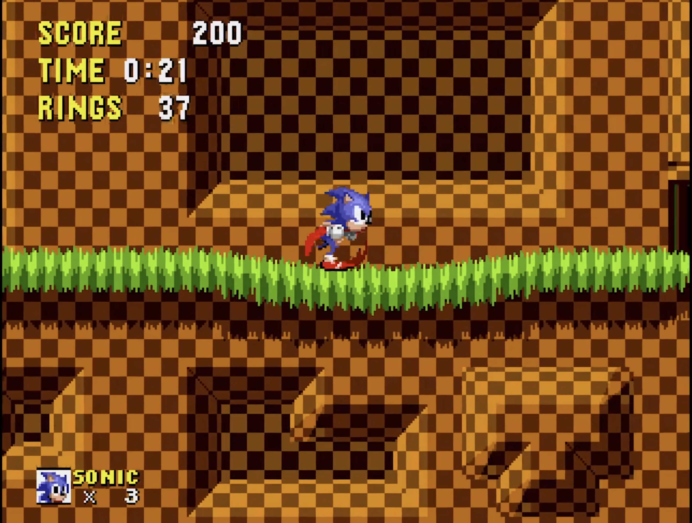
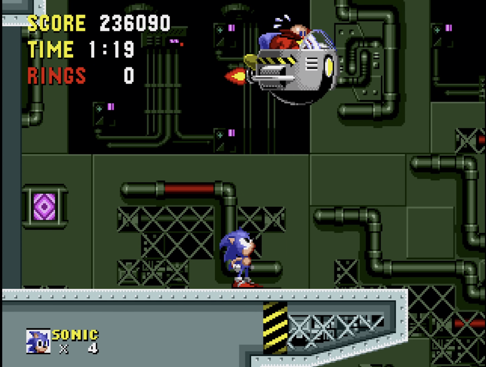

Introduction
Sonic the Hedgehog is a game developed and published by SEGA, first in June 1991 in North America and in the rest of the world the following month and is the first game of the Sonic the Hedgehog franchise.
Created as a response to Nintendo's SuperMario series' popularity, it became a symbol of the 16-bit era. It was first released for the fourth-generation console Sega Mega Drive.
Plot
The plot of this game is very simple: the evil Dr. Ivo Robotnik, better known as Dr. Eggman, is trapping animals in robot suits and metallic capsules in order to find the six Chaos Emeralds, powerful gems which possess a great amount of energy. The protagonist, Sonic the Hedgehog, must find all the Emeralds in the various levels, before the antagonist does.
Gameplay
Sonic the Hedgehog is a 2D platform video game: the character must run and spin at high speed through levels filled with enemies and obstacles to overcome.

At the beginning, the player has three lives, which may be lost if Sonic collides with enemies or objects, falls or fails to arrive at the end of the level within the time limit.
Signposts work as checkpoints, allowing Sonic to return to the most recent post everytime a life is lost; this implies a time reset. The game ends when the player has no more lives, but can get back to the beginning of the level if there are continues. Gold rings play an important role: collecting 100 of them gives an extra life; moreover, collision when there are rings collected does not end in a life lost, but in the loss of all rings.
The game is split into six principal zones, with each one divided into three acts. At the end of each zone's third act, the player has a boss fight with Dr. Eggman.

Each main zone has its own style with unique enemies and obstacles. After completing all the zones, the player must face the final boss battle in the Final Zone, and they must destroy the doctor's machine in order to win.
If Sonic reaches the end of one of the first two acts of a zone with at least 50 rings, he can jump through a larger ring to enter a Special Stage, where he can collect more continues and the hidden Chaos Emerald of the level.